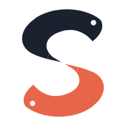
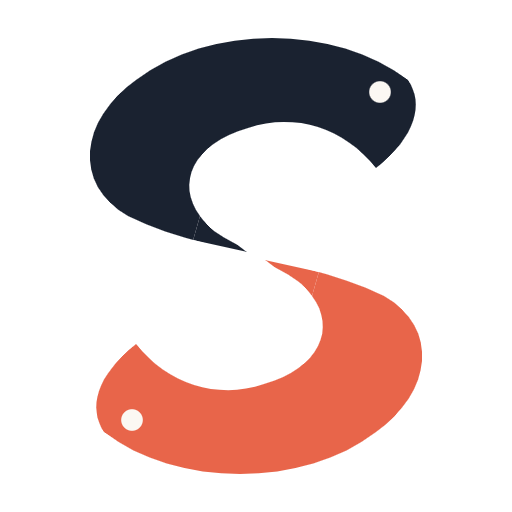
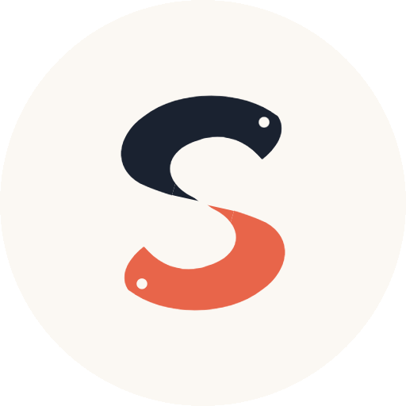
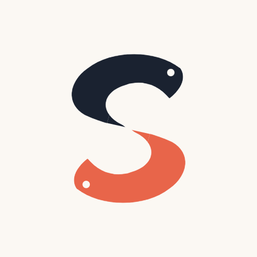
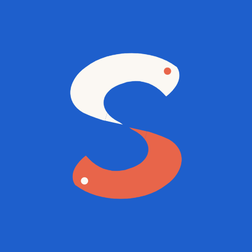

Znak zamknięty.
Komplet plików gotowy.
Wariant finalny: dwie ryby koi splecione w literę „S” — górne koi grafitowe, dolne koralowe, oczy w kolorze bazy. Wszystkie pliki leżą w katalogu logo/. Identyfikacja wizualna i brief dla grafika są zaktualizowane do tego znaku.
Logo pełne
min. 90 px / 30 mm szerokościPoniżej 32 px pracuje favicon bez oczu — prześwity zlewałyby się w plamę. Od 32 px w górę zawsze sygnet z oczami.
Rastry logo pełnego
wordmark w prawdziwym Lexend · gotowe do użytkuFavicony, ikony i awatary
PNG z przezroczystym tłem · ICO wielorozmiarowy




CMYK i propozycje Pantone (532 C / 7416 C / 2145 C) są punktem wyjścia — przed pierwszym drukiem wymagany proof i dopasowanie w profilu drukarni.
<link rel="icon" href="skills-academy-favicon.svg" type="image/svg+xml"> <link rel="icon" href="skills-academy-favicon.ico" sizes="any"> <link rel="apple-touch-icon" href="skills-academy-favicon-180.png">
Pole ochronne: wysokość sygnetu z każdej strony. Zakazane: obrót, odbicie, zmiana proporcji, zamiana kolorów koi, cień, obrys, gradient.
Dokumenty — zaktualizowane
Stary znak (wstęga z iskrą) został wymieniony w obu dokumentach na finalne koi, razem z opisami, wersjami użycia i statusem plików.
Dwa zadania dla grafika i marka jest gotowa do druku.
Wordmark jest już na krzywych — pliki nie wymagają kroju Lexend u odbiorcy. Zostaje dopasowanie kolorów w druku i jedna strona dla podwykonawców. Sylwety koi są ostateczne, nie rysujemy znaku od nowa.